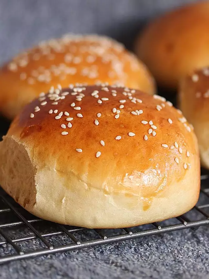

Hamburger Buns

OK, I have been searching for a good "all-purpose" white bread dough recipe - one that looks good, tastes good, feels soft, and doesn't get stale right away (yes, I'm a stickler, but when you go to all the trouble to make it yourself, you want it to be good). I just made these today, and so far the first three criteria are met! These rolls are GORGEOUS; even the dough is beautiful when you're working with it. They didn't taste bland to me at all, and usually I have to increase the salt or the sweetener in doughs. They are soft and yummy. I made 6 hamburger buns, 6 hot dog. I sprinkled sesame seeds on the hamb. buns. I just greased my cookie sheets - worked great! I'll see how they hold up in terms of getting stale - homemade bread does dry out sooner, but that's because it's not full of all those preservatives anyway! I have the leftovers in the freezer and will update on the "freshness factor" when I thaw them. You could easily get 24 smaller rolls out of this recipe. Highly recommend! *** Next day... I pulled one of the hamb. buns out of the freezer & thawed it in the microwave. Still very good texture & softness, although if you overheat it the bun can get a little tough. Thawing on the counter might have been a better idea. But this is good enough for me - I will look no further! LOVE IT! *** Even more updates - yes, thaw them on the counter, then heat in the microwave JUST until warm (for me, about 25 seconds for a hamb. bun). Delish.
Ingredients
- 1 cup milk
- 1 water
- 2 tablespoons butter
- 1 tablespoon white sugar
- 1½ teaspoons salt
- 5½ cups all-purpose flour
- 1 (.25 ounce) envelope active dry yeast
- 1 egg yolk
- 1 tablespoon water
Steps
- Combine the milk, 1 cup of water, butter, sugar and salt in a saucepan. Bring to a boil then remove from the heat and let stand until lukewarm. If the mixture is too hot, it will kill the yeast.
- In a large bowl, stir together the flour and yeast. Pour in wet ingredients and stir until the dough starts to pull together. If you have a stand mixer, use the dough hook to mix for about 8 minutes. If not, knead the dough on a floured surface for about 10 minutes. Place the dough in a greased bowl, turning to coat. Cover and let stand until doubled in size, about 1 hour.
- Punch down the dough and divide into 12 portions They should be a little larger than a golf ball. Make tight balls out of the dough by pulling the dough tightly around and pinching it at the bottom. Place on a baking sheet lined with parchment paper or aluminum foil. After the rolls sit for a minute and relax, flatten each ball with the palm of your hand until it is 3 to 4 inches wide. You may want to oil your hand first. Set rolls aside until they double in size, about 20 minutes.
- Preheat the oven to 400 degrees F (200 degrees C). Mix together the egg yolk and 1 tablespoon of water in a cup or small bowl. Brush onto the tops of the rolls. Position 2 oven racks so they are not too close to the top or bottom of the oven.
- Bake for 10 minutes in the preheated oven. Remove the rolls from the oven and return them to different shelves so each one spends a little time on the top. Continue to bake for another 5 to 10 minutes, or until nicely browned on the top and bottom.